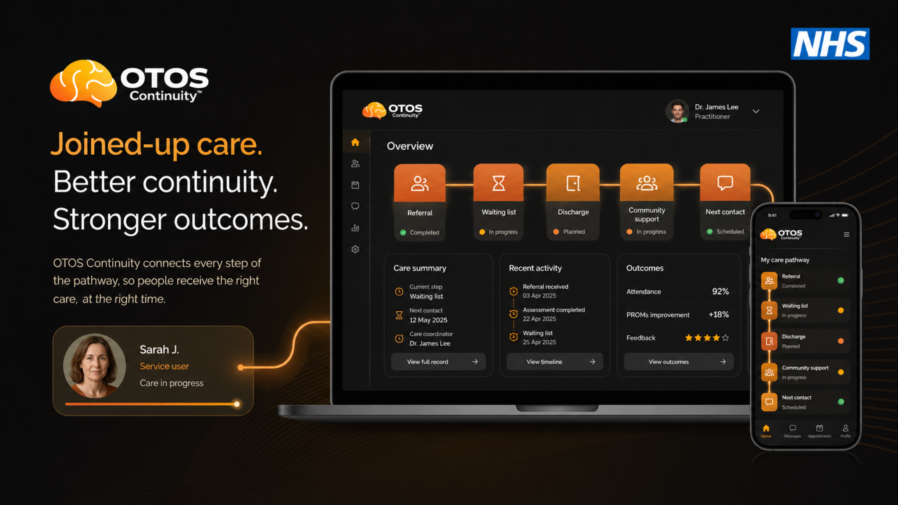

For GP
No added clinical workload. OTOS simply makes the referral step visible and receipted.
I navigated it privately because I had the resources to do so. Most people in this cohort don't. OTOS makes the Right to Choose route visible, receipted and traceable from first contact — without adding clinical burden to a single GP.

I've been briefed on OTOS Continuity™ — a non-clinical communications layer that helps make the Right to Choose referral pathway visible and receipted for adults with co-occurring ADHD and addiction. I understand it does not add to GP clinical workload, does not access any clinical system, and is designed to work alongside existing RTC and QbTech pathways. I'd like to explore the GP/RTC role in the scoping conversation.
Edit as you see fit. Two minutes to send. No commitment beyond the note.
Low integration. Low disruption. High clarity. No clinical system access, no diagnosis, no prescribing, no automated clinical decisions, no change to GP, RTC or QbTech workflows.
No added clinical workload. OTOS simply makes the referral step visible and receipted.
The pathway stays intact. OTOS helps stop people dropping out before assessment.
Objective assessment becomes easier to reach because the thread is held long enough to get there.
I was diagnosed privately seven years ago. I went onto shared care. I moved GP and was lucky — continuation of methylphenidate followed me. I have been on the waiting list since 2020 for a medication review. Right to Choose was never offered to me. I didn't know it existed until recently. And now, when I try to move forward, new GPs want either RTC proof or NHS diagnosis proof — neither of which I have, because my private diagnosis predates the RTC pathway entirely.
I am stuck in a gap the system created. And I am one of the more resourced people navigating it. For the adults in the ADHD and addiction cohort — without the language, the money or the fight — that gap is a full stop.
OTOS makes the RTC pathway visible from the moment someone first touches addiction or mental health services. It doesn't change how GPs make referrals. It makes it more likely that the referral gets made, and receipted when it does — so the person doesn't fall out of contact before they get there.

OTOS does not add to the GP referral process. It sits alongside it — making the thread visible from the moment referral is made, without requiring a single additional clinical step.
A named contact at GP network level, RTC pathway and QbTech — to help design the handoff protocol and confirm what visibility is appropriate at each stage.
When a GP makes an RTC referral for someone in the pre-pilot cohort, OTOS logs it as a receipted thread step. No extra clinical action required — just visibility that it happened.
Map the RTC pathway, agree what OTOS makes visible and what stays private, and design the lightest-possible touch for GP participation.
One note. One conversation. That is all it takes to start.